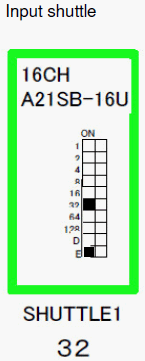

Service History
Subject: NS-7000 during dry cycle with tray, encountered #Jam 1406 Tray separation cylinder (lower) error on Reloader 2 but handler is using tray drawer 1 only
Handler Model: NS-7000 (S/N: 18606)
Controller: RC520
Date: 10~13 Dec 2012
Symptom
Intel Penang NS-7000 during dry cycle with tray, encountered #Jam 1406 Tray separation cylinder (lower) error on Reloader 2 but handler is using tray drawer 1 only.
Action
1) Reinstall MMI. Same.
2) Reinstall SPEL. Same.
3) Reload config.exe Same.
4) New HDD recovery. Same.
5) Wiring check. No problem.
6) IO module for 72 IO module checked and swap. Same.
7) Checked wiring for SQ121, SQ122, SQ123. No problem.
8) Checked uniwire for short condition. No problem.
9) Found SQ120-SQ127 always ON condition in SPEL.
10) SQ124 and SQ125 for drawer lane 2 not installed but also ON in SPEL IO
11) Physically cut sensor, physical sensor able to ON/OFF but SPEL always ON.
12) Physically cut sensor and IO module 72 able to ON/OFF.
13) Removed uniwire for IO module 72 but SQ120-SQ127 still ON.
14) Suspect short condition from path of IO module to SPEL Physical short or IO address short.
15) Checked all IN IO module for handler and no IO module with same address.
16) 1 by 1 IO module removed unwire to check for SQ120-SQ127 OFF.
17) Found Shuttle 1 IO module removed, able to trigger ON/OFF with SQ121-SQ123 SPEL IO.
18) Dry cycle with tray and no error.
19) With uniwire connector in but connectors to sensor removed, able to trigger SQ121-SQ123.
20) With uniwire and sensor connectors in, unable to trigger SQ121-SQ123
21) Shuttle 1 Input IO module replaced. Same.
22) Found shuttle 1 Input IO module address at 64 and is wrong for 16CH because will cause short with 72 Tray IN module addressing. (I/O bit overlapping)
23) Change Shuttle 1 IO module address to 32.
24) Dry run with try. No error.

Cause
Wrong IO address setting on Shuttle 1 16 Ch Input I/O module.